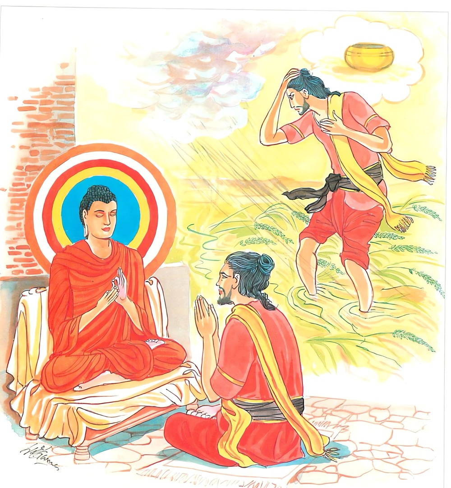

16-6 එක්තරා බ්රාහ්මණයෙකුගේ කථා පුවත
මෙම කතාව සද්ධර්ම සාගරයෙන් ද කියවන්න.
තණ්හාය ජායතී සොකො තණ්හාය ජායතී භයං
තණ්හාය විප්පමුත්තස්ස නත්ථි සොකො කුතො භයං.
තෘෂ්ණාව නිසා ම ශෝකය උපදනේ ය. තෘෂ්ණාව නිසා ම භය උපදනේ ය. තෘෂ්ණායෙන් මිදුනහුට ශෝකයෙක් නැත. බියෙක් කොයින් ද?

"තණ්හාය ජායතී” යන මේ ධර්ම දේශනය ශාස්තෲන් වහන්සේ දෙව්රම වැඩසිටියදි එක්තරා බමුණෙක් නිමිති කරගෙන දේශනා කළහ.
මිථ්යාදෘෂ්ටික වූ මේ බ්රාහ්මණයා එක් දිනක් ගංතෙරට ගොස් කුඹුරක් ශුද්ධ පවිත්ර කරයි. බුදුහු ඔහුගේ හේතු සම්පත් දැක ඔහු වෙත වැඩම කළහ. ඔහු බුදුන් දැකද සතුටු සාමිචියේ පවා නොයෙදී නිහඬව සිටියේය. අනතුරුව බුදුහු පළමුවෙන් කථා කොට බමුණ කුමක් කරන්නේ දැයි විමසුහ.
භාග්යවත් ගෞතමයන් වහන්ස කෙතක් එළිපෙහෙළි කරමියි පැවසීය. බුදුහු ඔහු හා මෙපමණක් කථාකොට වැඩම කළහ. දෙවැනි දිනයේ දි කුඹුර සීසෑමට පැමිණිවිට බ්රාහ්මණය කුමක් කරන්නේදැයි විමසා - කුඹුර සීසාමියි පැවසුවට පිටත්ව ගියහ. ඊටපසු දිනවලද - පැමිණ වැපිරිම පැළසිටුවීම - රැකීම ආදිය ගැන විමසා පිටත්ව ගියහ. මෙලෙස යන විට එක් දිනක් බමුණා - භාග්යවත් ගෞතමයනි ඔබ මගේ කෙත ශුද්ධ කරන දිනයේ සිට ආවේය. ඉදින් මගේ අස්වැන්න සරුවේද ඔබට ද බෙදා දෙමි. ඔබට නොදී මම පමණක් නොකන්නෙමියි මෙතැන් පටන් ඔබ මගේ යහලුවෙකි. අනතුරුව පසු දිනෙකදී ශෂ්ය සම්පත පැසුනි. දැන් කුඹුර පැසී ඇත. හෙට දිනයේ දෙන්නෙමියි ගොයම් කැපීමට සුදානම් කර තිබියදි රාත්රි මහා මේඝයක් ඇති වී සියලු ගොයම් ගසාගෙන ගියේය. කෙත සහින ලද බිමක් වැනිවිය. බුදුරජාණන් වහන්සේ පළමු දිනයේදීම එම අස්වැන්න ලබාගත නොහැකියයි දැනගත්හ. බමුණා උදයේ කුඹුර බලන්න ගියවිට හිස් කුඹුර දැක බලවත් ශෝකයක් ඇතිවී, මෙසේ සිතුවේය. ශ්රමණ භවත් ගෞතමයන් මම කෙත ශුද්ධ කරන අවස්ථාවේ සිට පැමිණියේය. මම ද මේ ගොයම් පැසුනවිට ඔබට ද බෙදා දෙමියි තනියම නොගනිමියිද ඔබ මගේ මිතුරායයිද පැවසුවෙමි. එහෙත් මගේ අදහස ඉටුනොවීය. මෙසේ සිතා ආහාර නොගෙනම ඇඳේ වැතුරුණි. අනතුරුව බුදුහු ගෙදොරට වැඩම කළහ. ඔහු බුදුන් වැඩම කළ බව අසා මගේ මිතුරා ගෙට කැඳවා මෙහි වාඩි කරවන්න යැයි පැවසුවේය. පිරිවරා ජනයා එසේ කළෝය. බුදුහු වැඩ හිඳ බ්රාහ්මණයා කොහිදැයි විමසුහ. කාමරයේ නිදා සිටීයයි පැවසුවිට ඔහුට කැඳවන්නැයි කැඳවා වාඩිවූවිට මෙසේ පැවසුහ. බමුණ කුමක්ද? ස්වාමීනි ඔබ වහන්සේ මම කුඹුර කැලෑ කපා ශුද්ධ කරන අවස්ථාවේ සිට වැඩම කළ හෙයින් මම අස්වැන්න පැසුන විට දෙන බවත් පැවසුවෙමි. ඒ මගේ අදහස ඉටු නොවීය. එනිසා මට මහත් ශෝකයක් ඇතිවිය. කැම පවා මට දැන් රුචිනොවේ යයි පැවසීය. අනතුරුව බුදුරජාණන් වහන්සේ බමුණාගෙන් බ්රහ්මණය ඔබට මෙතරම් ශෝකයක් ඇතිවුයේ කුමක් නිසාදැයි දන්නේදැයි විමසුහ.
භාග්යවත් ගෞතමයන් වහන්ස මා නොදනිමි. පැවසුවිට ඔබ දන්නේය එසේය බ්රාහ්මණය ශෝක - බිය ඇතිවන්නේ තෘෂ්ණාව නිසාය යනුවෙන් පවසා "තණ්හාය ජායති සෝකො" යන ගාථාව දේශනා කළහ.
සෝකයට හා බියට
තන්හාව මුල් වේමැයි
ආශාව දුරු කළවිට
සෝ බිය දෙකම නැතිවේ.
එම තෘෂ්ණාව සදොර නිසා - ඇතිවන්නේ යයි පැවසුහ. දේශනාවසානයේ බ්රාහ්මණයා සෝවාන් ඵලයට පත්විය.